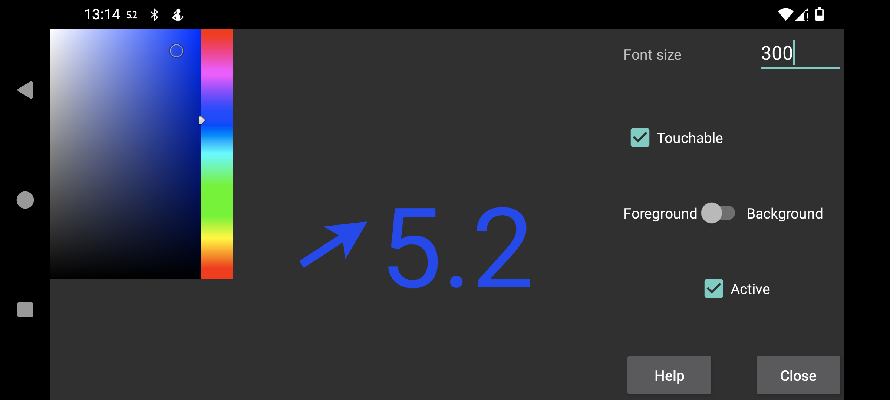

Здесь можно настроить размер шрифта, цвет переднего плана и цвет фона плавающего значения глюкозы.
Доступно для касания: если включено, плавающее значение можно перемещать пальцем и уменьшать долгим нажатием без перемещения. Если выключено, касания передаются окну под плавающим значением, так что можно пользоваться приложением под ним. Сделать плавающее значение недоступным для касания можно также двойным касанием.
Прозрачный: невидимый фон.
Поверх: сохранять плавающее значение видимым даже когда Juggluco находится на переднем плане.
Время: отметка времени значения глюкозы.
Активно: включить.
Включить и выключить плавающее значение можно через левое среднее меню→Плав. глюк..
Перейти в Juggluco можно касанием стороны со стрелкой плавающего значения. Двойное касание стороны со значением глюкозы делает плавающее значение недоступным для касаний. Долгое нажатие на сторону со значением глюкозы оставляет только маленькое значение, чтобы можно было взаимодействовать с тем, что находится под ним; касание маленького отображения снова увеличивает его. Перемещение при касании стороны со значением глюкозы перемещает плавающее значение.
Для отображения поверх других приложений Juggluco нужно специальное разрешение. На Wear OS, а также Android Automotive, это разрешение нужно дать через adb:
adb shell pm grant tk.glucodata android.permission.SYSTEM_ALERT_WINDOW
На некоторых часах, например TicWatch Pro, его также можно разрешить через Android/WearOS settings→Apps & notifications→App info→Juggluco→Advanced→Display over other apps.